| Principais habilidades da BNCC | EF07MA23 |
|---|---|
| Competências | CE8 ,CG9 |
Para iniciar o estudo dos ângulos consecutivos e adjacentes, sugerimos a construção de pipas. Esse é um bom momento para relembrar alguns conceitos envolvendo as medidas de ângulos. A atividade pode ser desenvolvida em duplas ou em grupos. Durante a confecção das pipas, pode-se retomar alguns conceitos de geometria estudados no ano anterior, como as retas paralelas e perpendiculares.
Os alunos deverão perceber que a posição das varetas poderá interferir no voo. Pode-se explorar os polígonos formados, bem como o seu perímetro. Eles poderão fazer um desenho no caderno representando a pipa que estão construindo, indicando suas medidas. Em seguida, poderão calcular o perímetro. Pode-se solicitar aos alunos uma pesquisa sobre a história da pipa.
Ao finalizar esse trabalho, é importante discutir com os alunos os procedimentos de segurança para se empinar uma pipa. Muitos acidentes ainda acontecem por falta de cuidados.
EF07MA01
CAPÍTULO 3 - Ângulos
Ângulos consecutivos e adjacentes
História das pipas
[...]
A história das pipas data de muitos séculos e se confunde com a própria história da civilização, sendo utilizada como brinquedo, instrumento de defesa, arma, objeto artístico e de ornamentação. Conhecida como qua- drado, pipa, papagaio, pandorga, barrilete ou outro nome, dependendo da região ou país, ela é uma velha conhecida de brincadeiras infantis. Todos nós, com maior ou menor sucesso, já tentamos empinar uma. Temos de preservar sua beleza e simbologia, pois faz parte da nossa infân- cia. As pipas adornam, disputam espaço, fazem acro- bacias, mapeiam os céus. São a extensão natural da mão querendo tocar nas ilusões.
[...]
Com a ajuda do seu colega, construam uma pipa maranhão ou pipa carioca. Veja os materiais que serão necessários e os procedimentos.

Pipa maranhão ou pipa carioca

Materiais:
► Varetas de qualquer tipo, sendo:
► 1 de 51 cm de comprimento e 2 mm de espessura;
► 2 de 32 cm de comprimento e 2 mm de espessura.
► Tesoura
► Papel de seda
► Cola branca
► Linha 10
► Régua
Para responder às questões propostas, foram efetuadas duas operações: uma adição e uma subtração entre as medidas dos ângulos. Vejamos algumas situações envolvendo essas operações.
193
UNIDADE 6 - CAPÍTULO 3
193
Comente com os alunos que as pipas, ou papagaios, foram criadas na China há cerca de 2 500 anos. Nesse tempo, ela não era para crianças, mas uma arma de guerra. Os chineses a usavam militarmente para transmitir sinais diversos com suas cores, desenhos e movimentos no ar. De lá, as pipas viajaram para o Japão, a Índia, e então para a Europa, de onde ganharam os céus do Ocidente.
Disponível em: https://cutt.ly/nHm8f4b.
EF07MA01
A cauda ideal é de tiras de plástico com 50 cm de comprimento por 2 cm de largura, colocadas em uma linha com 2 metros de extensão, a uma distância de 15 cm uma da outra.
Veja uma ilustração indicando as medidas que serão utilizadas para construir a pipa.
![Ilustração de um polígono em formato de pipa de 6 lados. A figura tem marcações que mostram 4 triângulos retângulos e 2 retângulos, tendo 2 triângulos em cima e embaixo com os 2 retângulos no meio.
A medida da vareta que divide a pipa ao meio mede 51 cm e as varetas superior e inferior medem 32 cm cada. Acima da vareta superior, os catetos dos dois triângulos retângulos medem 10 cm e 16 cm. Os lados dos retângulos que estão no centro da pipa medem 19 cm por 16 cm. Os catetos dos triângulos retângulos da parte inferior da ilustração medem 16 cm e 22 cm.](../../resources/images/unidade6/capitulo3/imagem2.png)
A vareta superior deve ter uma envergadura de 32 cm.
Procedimentos:
1. Amarre as varetas menores na vareta maior.
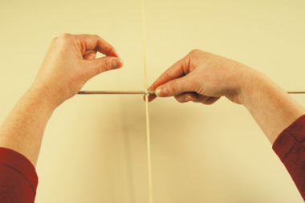2. Passe a linha em todas as pontas da armação.

194
UNIDADE 6 - CAPÍTULO 3
194
EF07MA01
3. Cole a armação sobre o papel, mas deixe a menor extremidade de fora.
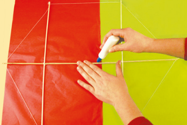4. Corte o papel um pouco maior que a armação. Essa margem servirá para a colagem.
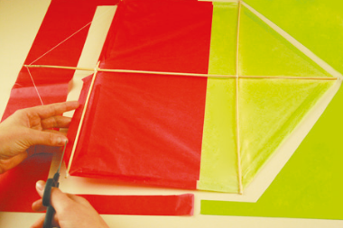5. Em cada extremidade, dê dois cortes.

6. Agora que todas as extremidades foram cortadas, passe cola sobre a margem e vire-a para dentro. Verifique se o papel está bem ajustado à linha.

7. Envergue a 1.ª das varetas e dê uma volta com a linha superior sobre a extremidade da vareta.

195
UNIDADE 6 - CAPÍTULO 3
195
Comente com os alunos a respeito de alguns cuidados importantes que devem ser tomados antes de se soltar as pipas. Descreva as principais regras de segurança e, se possível, leia de forma coletiva discutindo uma a uma com os alunos. Se possível promova um concurso de pipa com os alunos a fim de juntar a Arte e a Matemática.
EF07MA01
8. Em seguida, é só colocar o estirante (cabresto) e a rabiola.

Como regular o estirante (cabresto):
Uma regra prática para regular o estirante consiste em pendurá-lo e regular de modo que a superfície “D” forme um ângulo de aproximadamente 30º, como se vê na ilustração ao lado. Essa regulagem é aproximada, pois a definitiva será feita no momento de empinar. Estique a linha até chegar a um ponto em que esteja a dois dedos de distância (3 cm) da extremidade vertical e horizontal e dê um nó, fazendo o ângulo do estirante. A linha para empinar deve ser amarrada nesse ângulo.

Pronto! Agora, é só achar um lugar adequado para empinar sua pipa. Porém, algumas regras de segurança devem ser observadas para essa brincadeira:
• Utilize linhas de algodão, pois elas são menos perigosas. Nunca use linhas de fio de cobre ou com cerol;
• Preste atenção a motocicletas e bicicletas, porque a linha, mesmo sem cerol, é perigosa para os condutores;
• Procure um local aberto e distante de fios ou antenas para evitar choques elétricos, como campos de futebol e parques;
• Nunca solte pipas em dias de chuva ou com relâmpagos;
• De modo algum tente retirar pipas presas na rede elétrica ou árvores, nem faça pipas com papel laminado, pois há grande risco de choque e acidentes;
• Jamais solte pipa em lajes ou telhados, para evitar quedas;
• Tenha cuidado e observe onde pisa, principalmente quando andar para trás, para não cair;
• Caso a linha quebre, não corra atrás da pipa sem observar se o caminho é seguro, como atravessar ruas e passar por buracos;
• Use luvas ao soltar pipa, para não machucar as mãos.
196
UNIDADE 6 - CAPÍTULO 3
196
Proponha aos alunos que consultem no dicionário o significado dos termos consecutivo e adjacente e, compartilhem com os demais colegas o que descobriram.
Em seguida, proponha atividades que envolvam o uso dos termos fora do contexto de ângulos, como em uma sequência numérica, na disposição dos alunos em sala. Após esse momento de interação e reflexão sobre os termos, explique aos alunos que, em Geometria, dois ângulos são consecutivos quando possuem o mesmo vértice e um de seus lados em comum, podendo haver outros pontos em comum. Comente também que o ângulo adjacente é um tipo particular de ângulo consecutivo.
EF07MA01
Observe os ângulos formados pelas varetas da pipa. Veja também a representação de seus ângulos na ilustração.
Os ângulos AÔB e BÔC apresentam um vértice e um dos lados em comum. Esses ângulos são chamados de ângulos consecutivos.
Dois ângulos são denominados de ângulos consecutivos quando têm em comum o vértice e um dos lados.
Além de serem ângulos consecutivos, os ângulos AÔB e BÔC são denominados ângulos adjacentes, pois não têm pontos internos em comum.
Dois ângulos são denominados de ângulos adjacentes quando são consecutivos e não possuem pontos internos em comum.

Observe:
MÔN e MÔP são ângulos consecutivos, porém não são ângulos adjacentes.
MÔN e NÔP, além de serem ângulos consecutivos, são ângulos adjacentes.
197
UNIDADE 6 - CAPÍTULO 3
197
Bissetriz de um ângulo
Para o estudo da bissetriz, solicite aos alunos que construam, em um papel A4, um ângulo com uma medida qualquer. Depois, recortem essa figura e dobrem-na ao meio, fazendo um vinco. Mostre que as metades obtidas possuem a mesma medida. Para comprovar essas medidas, pode-se utilizar o transferidor.
EF07MA01

MÔN e PÔQ não são ângulos consecutivos, logo, não são ângulos adjacentes.
Bissetriz de um ângulo
Com o auxílio do transferidor, construa, em uma folha de papel, um ângulo de 90º.

Em seguida, recorte o ângulo e dobre-o, de modo que um lado coincida com o outro.
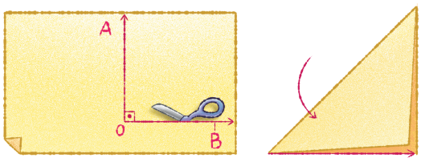Com um lápis e uma régua, trace sobre a marca que ficou no papel (depois de dobrado) uma semirreta \(\overrightarrow{OC}\).
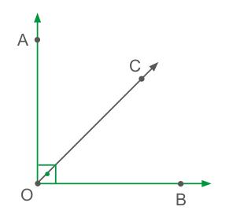198
UNIDADE 6 - CAPÍTULO 3
198
Relacione a bissetriz de um ângulo com o eixo de simetria. Visto que a bissetriz é a semirreta que divide um ângulo em 2 partes de medidas de abertura iguais.
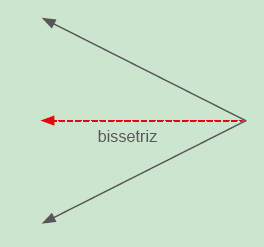EF07MA01
A semirreta \(\overrightarrow{OC}\) que você traçou dividiu o ângulo AÔB em dois ângulos com a mesma medida, ou seja, congruentes. Essa semirreta com origem em O denomina-se bissetriz de um ângulo.
Bissetriz de um ângulo é a semirreta que tem origem no vértice desse ângulo, dividindo-o em dois ângulos adjacentes congruentes.
Agora, vamos construir a bissetriz de um ângulo qualquer utilizando um compasso.
Em seu caderno, construa um ângulo AÔB, com uma medida qualquer.
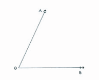Usando o compasso, coloque a ponta-seca no vértice O. Com uma abertura qualquer, marque os pontos D e E.
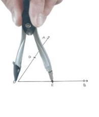Primeiramente, coloque a ponta-seca do compasso em D e desenhe um arco. Depois, coloque-a em E, com a mesma abertura, e repita o procedimento. Marque o ponto F, no qual os arcos se intersectam.
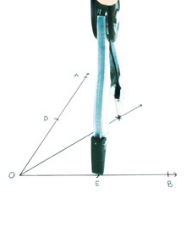Em seguida, trace a semirreta \(\overrightarrow{OF}\), bissetriz do ângulo AÔB.
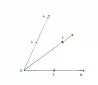199
UNIDADE 6 - CAPÍTULO 3
199
Encontre soluções
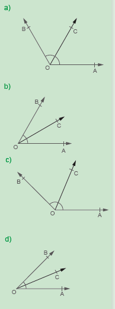Atividade 2
4x - 5º = 3x + 6º
x = 6º + 5º
x = 11º
EF07MA01
ENCONTRE SOLUÇÕES
1. Utilizando um transferidor, um compasso e uma régua, construa, em seu caderno, os ângulos indicados e trace a bissetriz de cada um deles.
a) 120º
b) 60º
c) 135º
d) 45º
2. Determine a medida de x, sabendo que \(\overrightarrow{OC}\) é bissetriz de AÔB. x = 11º. Os alunos devem usar a propriedade da bissetriz para chegar à igualdade 4x − 5º = 3x + 6º.
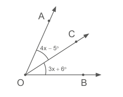3. Calcule as medidas dos ângulos desconhecidos.
a) med (AÔC) = 66º
x = 33º\(\overrightarrow{OB}\): bissetriz de AÔC
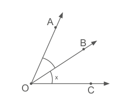b) med (MÔN) = 60º
y = 60º\(\overrightarrow{ON}\): bissetriz de MÔP

c) med (AÔD) = 130º
y = 65º; x = 32º 30’\(\overrightarrow{OB}\): bissetriz de AÔD
\(\overrightarrow{OC}\): bissetriz de BÔD
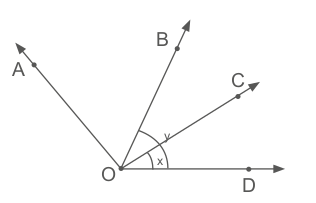4. Calcule a med (AÔC) em cada caso, sabendo que \(\overrightarrow{OB}\) é bissetriz de AÔC.
a)
med (AÔC) = 70º 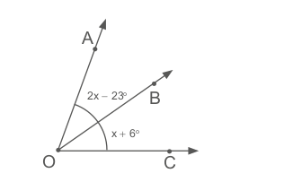b)
med (AÔC) = 88º 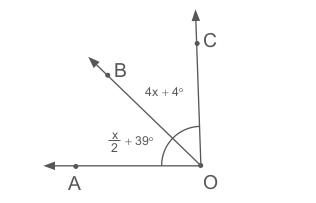5. Na figura a seguir, AÔE é um ângulo raso, \(\overrightarrow{OB}\) é bissetriz do ângulo AÔC e \(\overrightarrow{OD}\) é bissetriz de CÔE.
![Ilustração de cinco retas, A, B, C, D e E saindo do mesmo vértice Ô. Elas estão espaçadas entre si, com aberturas que formam dez ângulos, apenas dois deles com marcadores. As retas A e E estão na horizontal, a reta A apontada para a esquerda e a reta E apontada para a direita. Elas formam um ângulo raso AÔE. A reta OB, está na transversal, levemente inclinada para a esquerda. Ela é bissetriz do ângulo AÔC. As retas C e D, estão na transversal, apontadas para a direita. A reta OD é bissetriz do ângulo CÔE. Um marcador de ângulo, identificado pela fórmula: 6x +15º, liga os lados A e B. Um segundo marcador de ângulo, identificado pela fórmula: x + 5º, liga os lados D e E.](../../resources/images/unidade6/capitulo3/imagem30.png)
200
UNIDADE 6 - CAPÍTULO 3
Atividade 4
a) 2x - 23º = x + 6º
x = 23º + 6º
x = 29º
med (AÔC) =
= 2x - 23º + x + 6º =
= 58º - 23º + 29º + 6º = 70º
200
Atividade 5
a) 6x + 15º + 6x + 15º + x + 5º +
x + 5º = 180º
14x = 180º - 40º
14x = 140º
x = 10º
Atividade 6
O jogo pode motivar os estudantes a aprender e fixar os conceitos que estão sendo estudados. No batalha naval, os alunos utilizarão o conceito de bissetriz de um ângulo para construir o plano em que serão localizados os pontos. Com o auxílio de régua e compasso, ao traçar as bissetrizes, eles estarão construindo ângulos em que deverão indicar as suas medidas, precisando, dessa forma, realizar divisões das medidas dos ângulos por um número natural.
Esse jogo será realizado em duplas e o objetivo é afundar os navios do adversário. Os alunos poderão se familiarizar com a notação de pares ordenados, conceito que será estudado posteriormente, porém que pode ser utilizado durante o jogo.
EF07MA01
► Nessas condições, determine:
a) o valor de x; x = 10°
b) as medidas dos ângulos:
► AÔB; med (AÔB) = 6 · 10 + 15 = 75º
► BÔC; med (BÔC) = med (AÔB) = 75º
► DÔE; med (DÔE) = 10 + 5 = 15º
► CÔD; med (CÔD) = med (DÔE) = 15º
► AÔC; med (AÔC) = med (BÔC) + med (AÔB) = 75º + 75º = 150º
► CÔE; med (CÔE) = med (CÔD) + med (DÔE) = 15º + 15º = 30º
► AÔD; med (AÔD) = 75º + 75º + 15º = 165º
► BÔE. med (BÔE) = 75º + 15º + 15º = 105º
6. Vamos jogar batalha naval?
1. Com o auxílio de uma régua, construa, em uma folha de papel, duas retas perpendiculares, formando quatro ângulos de 90º.
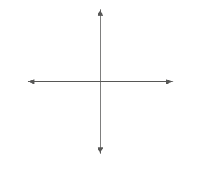2. Em seguida, com o auxílio do compasso, trace a bissetriz desses ângulos.
3. Trace novamente a bissetriz dos ângulos encontrados, ob- tendo a divisão de 360º em 16 partes iguais.
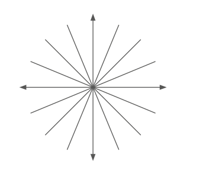4. Utilizando um compasso, trace três circunferências, com o centro no ponto de encontro das retas.
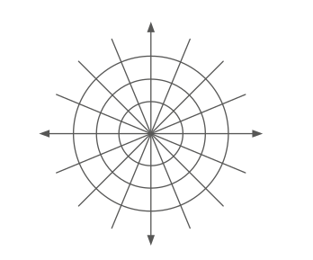201
UNIDADE 6 - CAPÍTULO 3
201
De acordo com Guedes e Guedes (2005), a Matemática pode se revelar muito interessante e divertida, até para quem diz detestá-la. Isso é possível por meio de jogos, recursos lúdicos que, às vezes, não são tão aproveitados na escola. Conforme Borin (apud Guedes e Guedes, 2005, p. 76), “dentro da situação de jogo, onde é impossível uma situação passiva e a motivação é grande, notamos que, ao mesmo tempo que estes alunos fazem Matemática, apresentam também um melhor desempenho e atitudes mais positivas diante de seus processos de aprendizagem.” A competição dá um retorno emocional satisfatório.
EF07MA01
5. Indique as medidas dos ângulos nas extremidades e coloque números para indicar as circunferências, conforme o modelo.
![Ilustração de duas retas perpendiculares com setas nas pontas, duas retas em forma de X passam pelo ponto em comum das retas perpendiculares, formando entre as retas 8 ângulos iguais. Mais duas retas são traçadas entre as retas dos 8 ângulos iguais, formando assim 16 ângulos iguais. Três circunferências de tamanhos diferentes, partem do centro no ponto de encontro das retas e são nomeadas de 1, 2, 3 de centro para fora. Partindo da reta horizontal à direita, no sentido anti-horário, cada reta, a partir do ponto de encontro entre elas, está indicada com o ângulo correspondente: 0 grau = 360 graus. 22 graus e 30’. 45 graus. 67 graus e 30’. 90 graus. 112 graus e 30’. 135 graus. 157 graus e 30’. 180 graus. 202 graus e 30’. 225 graus. 247 graus e 30’. 270 graus. 292 graus e 30’. 315 graus. 337 graus e 30’.](../../resources/images/unidade6/capitulo3/imagem35.png)
6. Pronto! Agora é só jogar. Localize cinco pontos no plano construído. Os pontos representam a localização dos navios que deverão ser afundados. Para localizar cada ponto, primeiro deve-se indicar o número correspondente à circunferência e depois a medida correspondente à amplitude do ângulo.
Observe:
![Ilustração de duas retas perpendiculares com setas nas pontas, duas retas em forma de X passam pelo ponto em comum das retas perpendiculares, formando entre as retas 8 ângulos iguais. Mais duas retas são traçadas entre as retas dos 8 ângulos iguais, formando assim 16 ângulos iguais. Três circunferências de tamanhos diferentes, partem do centro no ponto de encontro das retas e são nomeadas de 1, 2, 3 do centro para fora. Partindo da reta horizontal à direita, no sentido anti-horário, cada reta, a partir do ponto de encontro entre elas, está indicada com o ângulo correspondente: 0 grau = 360 graus. 22 graus e 30’. 45 graus. 67 graus e 30’. 90 graus. 112 graus e 30’. 135 graus. 157 graus e 30’. 180 graus. 202 graus e 30’. 225 graus. 247 graus e 30’. 270 graus. 292 graus e 30’. 315 graus. 337 graus e 30’. Em cima do ângulo de 45 graus na terceira circunferência, um ponto verde, indicado pelo número 3; 45 graus.](../../resources/images/unidade6/capitulo3/imagem36.png)
Convide um colega para jogar com você. Alternadamente, cada um “dá um tiro” para tentar afundar o navio do outro. Caso acerte a posição, pode “atirar” novamente. Quando o adversário acertar a posição do navio, o jogador deverá informá-lo dizendo “afundou”. Caso contrário, deve dizer “água”. Vence o jogador que conseguir afundar primeiro todos os navios do adversário.
Para você poder registrar os “tiros” que foram dados, pode-se construir dois planos: um para você marcar os seus navios e outro para você anotar os seus palpites.
202
UNIDADE 6 - CAPÍTULO 3
202
Ângulos complementares
Durante a explicação de ângulos complementares, permita que os alunos utilizem o transferidor, observe se o utilizam de forma autônoma e se chegam à conclusão que dois ângulos são chamados de ângulos complementares quando a soma de suas medidas é igual a 90°. Explique aos alunos que o termo complementar significa completar algo.
EF07MA01
Ângulos complementares
Observe os ângulos presentes na estrutura de um telhado. Vamos analisar dois deles.
![Fotografia colorida da estrutura interna de madeira de um telhado. Tábuas grossas de madeira são unidas formando diferentes formas geométricas. No centro da fotografia, uma viga horizontal cruza o forro. Perpendicular a ela e no centro da estrutura, outra viga é colocada num ângulo de 90º, sustentada pela viga horizontal. À direita e à esquerda da viga perpendicular há quatro triângulos encaixados, dois de cada lado, também sustentados pela viga horizontal. Um desses triângulos é um triângulo retângulo, o outro é acutângulo. Essa estrutura dos dois triângulos é espelhada.](../../resources/images/unidade6/capitulo3/imagem37.png)
Por meio de um modelo matemático, vamos representar dois desses ângulos. Observe:
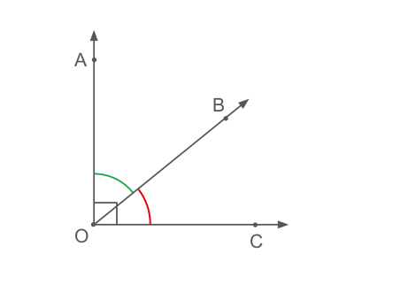1. Troque ideias com um colega e respondam quanto mede a soma das medidas dos ângulos AÔB e BÔC. 90º

2. Quando dois ângulos têm a soma de suas medidas igual a 90º, eles recebem um nome especial. Como são chamados? Ângulos complementares.
Dois ângulos são chamados de ângulos complementares quando a soma de suas medidas é igual a 90º.
203
UNIDADE 6 - CAPÍTULO 3
203
Durante a explicação de ângulos complementares, permita que os alunos utilizem o transferidor, observe se o utilizam de forma autônoma e se chegam à conclusão que os ângulos complementares são dois ângulos cuja soma das medidas de abertura é 90° e são suplementares quando a soma das medidas de abertura é 180°. Explique também que o termo suplementar significa adicionar algo a mais do que o necessário para completar.
EF07MA01
Veja um exemplo em que os ângulos são complementares:
med (AÔB) + med (BÔC) = 90º
med (AÔB) + 40º = 90º
med (AÔB) = 90º − 40º
med (AÔB) = 50º
Dizemos que o complemento do ângulo de 40º é 50º, pois é quanto falta para completar 90º. Nesse caso, AÔB é complementar de BÔC, assim como BÔC é complementar de AÔB.
Ângulos suplementares
Observe, agora, outros dois ângulos presentes na estrutura do telhado.
![Fotografia colorida da estrutura interna de madeira de um telhado. Tábuas grossas de madeira são unidas formando diferentes formas geométricas. No centro da fotografia, uma viga horizontal cruza o forro. Perpendicular a ela e no centro da estrutura, outra viga é colocada num ângulo de 90º, sustentada pela viga horizontal. À direita e à esquerda da viga perpendicular há quatro triângulos encaixados, dois de cada lado, também sustentados pela viga horizontal. Um desses triângulos é um triângulo retângulo, o outro é acutângulo. Essa estrutura dos dois triângulos é espelhada.](../../resources/images/unidade6/capitulo3/imagem40.png)
Ao representar, por meio de um modelo matemático, os outros dois ângulos presentes na estrutura do telhado, temos:
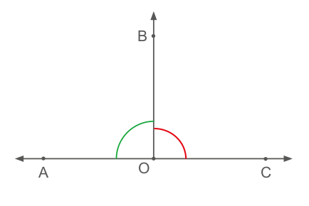204
UNIDADE 6 - CAPÍTULO 3
204
EF07MA01
1. Troque ideias com um colega e respondam quanto mede a soma das medidas dos ângulos AÔB e BÔC. 180º
2. Quando dois ângulos têm a soma de suas medidas igual a 180º, eles recebem um nome especial. Como são chamados? Ângulos suplementares.
Dois ângulos são chamados de ângulos suplementares quando a soma de suas medidas é igual a 180º.
Veja um exemplo em que os ângulos são suplementares:
med (AÔB) + med (BÔC) = 180º
med (AÔB) + 60º = 180º
med (AÔB) = 180º − 60º
med (AÔB) = 120º
Dizemos que o suplemento do ângulo de 60º é 120º, pois é quanto falta para completar 180º. Nesse caso, AÔB é suplementar de BÔC, assim como BÔC é suplementar de AÔB.
ENCONTRE SOLUÇÕES
1. Verifique se as afirmações são verdadeiras ou falsas e justifique as respostas em seu caderno.
a) Os ângulos de 25º e 65º são suplementares. Falsa. Como a soma das medidas dos ângulos é 90º, eles são complementares.
b) Os ângulos de 35º e 45º são complementares. Falsa. Como a soma das medidas dos ângulos é 80º, temos um ângulo agudo.
c) Os ângulos de 120º e 60º são suplementares. Verdadeira. Como a soma das medidas dos ângulos é 180º, eles são suplementares.
d) Os ângulos de 40º e 50º são complementares. Verdadeira. Como a soma das medidas dos ângulos é 90º, eles são complementares.
2. Sendo x a medida de um ângulo, escreva, em seu caderno, a expressão que representa:
a) a medida do seu complemento; 90º − x
b) a medida do seu suplemento; 180º − x
c) o dobro do seu complemento; 2(90º − x)
d) o triplo do seu suplemento; 3(180º − x)
e) a metade do seu suplemento; 180º − x/2
f) a quarta parte do seu complemento. 90º − x/4
205
UNIDADE 6 - CAPÍTULO 3
205
Encontre soluções
Atividade 3
a) 2x + x = 90º
3x = 90º
x = 30º
b) x + 20º + x + 10º = 90º
2x = 90º - 30º
2x = 60º
x = 30º
c) 2x - 20º + 3x - 15º = 90º
5x - 35º = 90º
5x = 90º + 35º
5x = 125º
x = 25º
d) x + 15º + 4x = 90º
5x = 90º - 15º
5x = 75º
x = 15º
Atividade 5
x = 90° - x/4
4x = 90° - x
5x = 90°
x = 18°
Atividade 6
a) 3x + 5º + x + 15º = 180º
4x + 20º = 180º
4x = 160º
x = 40º
b) x + 10º + 8x - 10º = 180º
9x = 180º
x = 20º
c) 47º 30’ + x = 180º
x = 180º - 47º 30’
x = 132º 30’
d) x + 12º + x - 23º = 180º
2x = 180º - 12º + 23º
2x = 191º
x = 95º 30’
EF07MA01
3. Em seu caderno, calcule o valor de x, sabendo que os ângulos são complementares.
a)
![Ilustração de três retas, sem identificação, saindo do mesmo vértice. Uma reta está na horizontal, apontada para a direita, e a outra na vertical, as duas, unidas pelo mesmo vértice, formando um ângulo de 90º. Uma terceira reta, inclinada para a direita, divide o ângulo de 90º em dois ângulos diferentes. Um marcador de ângulo, identificado por 2x, liga o lado da reta vertical com o lado da reta inclinada. Um segundo marcador de ângulo, identificado por X, liga o lado da reta inclinada com o lado da reta horizontal.](../../resources/images/unidade6/capitulo3/imagem43.png) x = 30º
x = 30º
b)
![Ilustração de três retas, sem identificação, saindo do mesmo vértice. Uma reta, apontada para a esquerda, está na horizontal e a outra na vertical, com um leve inclinamento para a direita, as duas, unidas pelo mesmo vértice, formam um ângulo maior que 90º. Uma terceira reta, inclinada para a esquerda, divide o ângulo maior em dois ângulos menores e diferentes. Um marcador de ângulo, identificado por x + 20º, liga o lado da reta vertical com o lado da reta inclinada. Um segundo marcador de ângulo, identificado por x + 10º, liga o lado da reta inclinada com o lado da reta horizontal.](../../resources/images/unidade6/capitulo3/imagem44.png) x = 30º
x = 30º
c)
![Ilustração de três retas, sem identificação, saindo do mesmo vértice. Uma reta está horizontal, apontada para a direita, e a outra na vertical, as duas, unidas pelo mesmo vértice, formam um ângulo de 90º. Uma terceira reta, levemente inclinada para a direita, divide o ângulo de 90º em dois ângulos diferentes. Um marcador de ângulo, identificado por 2x - 20º, liga o lado da reta vertical com o lado da reta inclinada. Um segundo marcador de ângulo, identificado por 3x - 15º, liga o lado da reta inclinada com o lado da reta horizontal.](../../resources/images/unidade6/capitulo3/imagem45.png) x = 25º
x = 25º
d)
![Ilustração de três retas, sem identificação, saindo do mesmo vértice. Uma reta está horizontal, apontada para a direita, e a outra na vertical, as duas, unidas pelo mesmo vértice, formam um ângulo de 90º. Uma terceira reta, levemente inclinada para a direita, divide o ângulo de 90º em dois ângulos diferentes. Um marcador de ângulo, identificado por x - 15º, liga o lado da reta vertical com o lado da reta inclinada. Um segundo marcador de ângulo, identificado por 4x, liga o lado da reta inclinada com o lado da reta horizontal.](../../resources/images/unidade6/capitulo3/imagem46.png) x = 21º
x = 21º
4. Determine a medida do ângulo que é congruente ao seu complemento. 45º
5. A medida de um ângulo é igual à quarta parte da medida do seu complemento. Calcule a medida desse ângulo. x = 18º.
6. Em seu caderno, calcule o valor de x, sabendo que os ângulos são suplementares.
a)
![Ilustração de três retas, sem identificação, saindo do mesmo vértice. Elas estão espaçadas entre si, com aberturas que formam três ângulos diferentes, apenas dois deles com marcadores. Duas retas estão na horizontal, uma apontada para a esquerda, e a outra, apontada para a direita do vértice, formando um ângulo de 180º. Uma terceira reta está inclinada para a direita. Um marcador de ângulo, identificado pela fórmula 3x + 5, liga o lado da reta horizontal esquerda com o lado da reta inclinada. Um segundo marcador de ângulo, identificado pela fórmula x + 15º, liga o lado da reta inclinada com o lado da reta horizontal direita.](../../resources/images/unidade6/capitulo3/imagem47.png) x = 40º
x = 40º
b)
![Ilustração de três retas, sem identificação, saindo do mesmo vértice. Elas estão espaçadas entre si, com aberturas que formam três ângulos diferentes, apenas dois deles com marcadores. Duas retas estão na horizontal, uma apontada para a esquerda, e a outra, apontada para a direita do vértice, formando um ângulo de 180º. Uma terceira reta está inclinada para a esquerda. Um marcador de ângulo, identificado pela fórmula x + 10º, liga o lado da reta horizontal esquerda com o lado da reta inclinada. Um segundo marcador, identificado por 8x - 10º, liga o lado da reta inclinada com o lado da reta horizontal direita.](../../resources/images/unidade6/capitulo3/imagem48.png) x = 20º
x = 20º
c)
![Ilustração de três retas, sem identificação, saindo do mesmo vértice. Elas estão espaçadas entre si, com aberturas que formam três ângulos diferentes, apenas dois deles com marcadores. Duas retas estão na horizontal, uma apontada para a esquerda, e a outra, apontada para a direita do vértice, formando um ângulo de 180º. Uma terceira reta está inclinada para a esquerda. Um marcador de ângulo, identificado por 47º 30’, liga o lado da reta horizontal esquerda com o lado da reta inclinada. Um segundo marcador, identificado por X, liga o lado da reta inclinada com o lado da reta horizontal direita.](../../resources/images/unidade6/capitulo3/imagem49.png) x = 132° 30’
x = 132° 30’
d)
![Ilustração de três retas, sem identificação, saindo do mesmo vértice. Elas estão espaçadas entre si, com aberturas que formam três ângulos diferentes, apenas dois deles com marcadores. Duas retas estão na horizontal, uma apontada para a esquerda, e a outra, apontada para a direita do vértice, formando um ângulo de 180º. Uma terceira reta está levemente inclinada para a direita. Um marcador de ângulo, identificado pela fórmula x +12º, liga o lado da reta horizontal esquerda com o lado da reta inclinada. Um segundo marcador, identificado pela fórmula x - 23º, liga o lado da reta inclinada com o lado da reta horizontal direita.](../../resources/images/unidade6/capitulo3/imagem50.png) x = 95º 30’
x = 95º 30’
7. A quinta parte da medida do complemento de um ângulo é igual a 10º. Quanto mede esse ângulo? x = 40º.
8. A medida de um ângulo é igual à terça parte da medida do seu suplemento. Calcule a medida desse ângulo. x = 45º.
9. O dobro da medida de um ângulo é igual à medida do seu suplemento mais 30º. Quanto mede esse ângulo? x = 70º
206
UNIDADE 6 - CAPÍTULO 3
206
Atividade 7
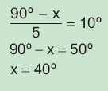Atividade 8
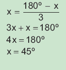Atividade 9
2x = 180º - x + 30º
3x = 210º
x = 70º
Atividade 10
x + 50º + 50º = 180º
x = 180º - 100º
x = 80º
EF07MA01

10. (OBMEP) Uma tira de papel retangular é dobrada ao longo da linha tracejada, conforme indicado, formando a figura plana da direita. Qual a medida do ângulo x ?
a) 30°
b) 50°
c) X 80°
d) 100°
e) 130°
Ângulos opostos pelo vértice
A cadeira a seguir apresenta uma estrutura de madeira e nela podemos observar a formação de vários ângulos.

Vamos representar alguns ângulos da estrutura de madeira no seguinte modelo matemático:
 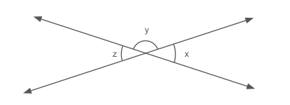
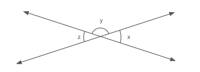
Agora, veja as relações que existem entre esses ângulos:
I. x + y = 180º (ângulos suplementares)
x = 180º − y
207
UNIDADE 6 - CAPÍTULO 3
207
Encontre soluções
Atividade 2
3x + 12º = 4x - 10º
x = 22º
Os ângulos medem 78º.
Atividade 3
a) x + 32º = 3x - 16º
2x = 48º
x = 24º
x - 15°/2 = 2 - 75 º
x - 15º = 2x - 150º
x = 135º
Medida do ângulo: x - 75º = 135º - 75º = 60º y = 180º - 60º = 120º
EF07MA01
II. y + z = 180º
z = 180º − y (ângulos suplementares)
Se x = 180º − y e z = 180º − y, então x = z (propriedade transitiva).
Portanto, os ângulos x e z são congruentes.
Esses ângulos têm o mesmo vértice e seus lados são semirretas opostas. Eles são chamados de ângulos opostos pelo vértice (opv).

med (AÔC) = med (BÔD)
med (AÔB) = med (CÔD)
ENCONTRE SOLUÇÕES
1. Calcule as medidas dos ângulos indicados nas figuras.
a)
x = 45º; y = 135º; z = 135º 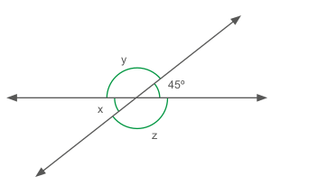b)
x = 100º; y = 55º; z = 25º; w = 55º![Ilustração de três segmentos de retas, sem identificação. Duas retas diagonais estão cruzadas em X, uma apontada para a direita, e a outra apontada para a esquerda. A terceira reta, cruza o X na horizontal. Essa composição, forma três pares de ângulos, opostos pelo vértice. O primeiro par, ângulos verticais, são maiores e iguais. Um marcador de ângulo está identificado por X e o outro marcador de ângulo está identificado por 100º. O segundo par, os ângulos são menores, iguais e estão posicionados entre os lados da reta diagonal direita e reta horizontal. Um marcador de ângulo está identificado por W e o outro marcador de ângulo está identificado por Y. O terceiro par, os ângulos são iguais e menores que o segundo par, e estão posicionados entre os lados da reta diagonal esquerda e reta horizontal. Um marcador de ângulo está identificado por 25º e o outro marcador de ângulo está identificado por Z.](../../resources/images/unidade6/capitulo3/imagem56.png)
2. As medidas de dois ângulos opostos pelo vértice são dadas, em graus, por 3x + 12º e 4x − 10º. Quais são as medidas desses ângulos?
x = 22º; cada ângulo mede 78º.3. Em seu caderno, calcule os valores de x e y.
a)
x = 24º
b)
x = 135º; y = 120º 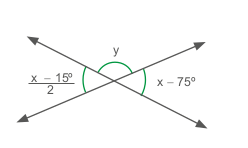208
UNIDADE 6 - CAPÍTULO 3
208